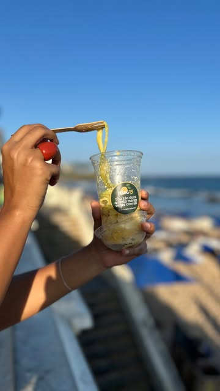

O que rima com
Manga verde
e sal?Lá ele!
Manga fresca, limão e tempero do seu jeito.
Da Barra, pra ir com você.
Sábados e domingos na Barra • Salvador, Bahia
A manga é fresca. O resto é contigo.
Qual é o
seu tempero?
Do limão com sal à mistura que surpreende.

Tem sol, tem mar, tem manga.
Melhor ainda
com resenha.
Salvador, Bahia
O encontro
é na Barra.
Um passeio pela orla.
Uma pausa pra mangar.
- Onde?
- Farol da Barra como referência.
- Quando?
- Sábados e domingos.
Confirme o ponto e o horário nos Stories.
Dias extras? A gente avisa por lá também.